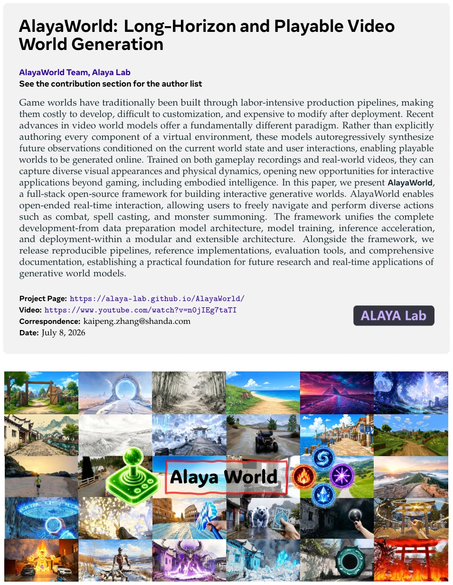
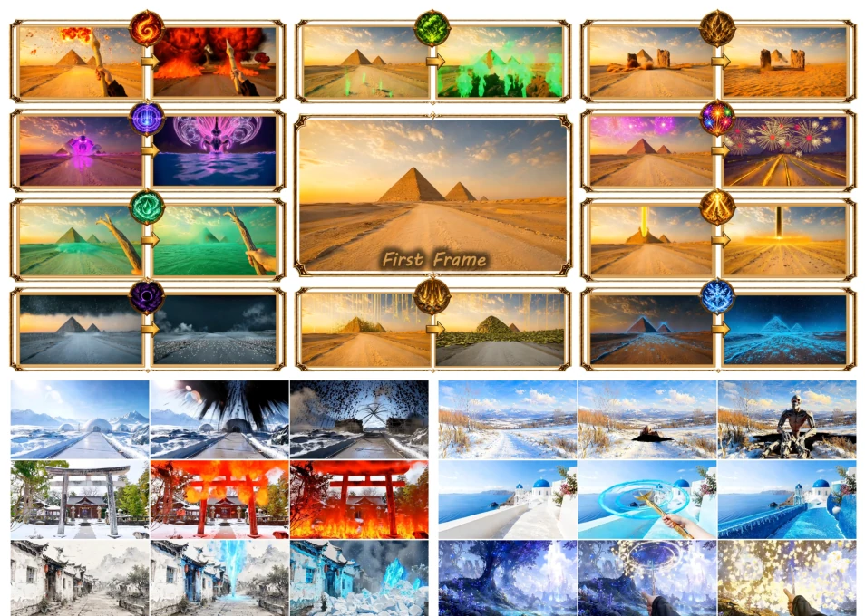
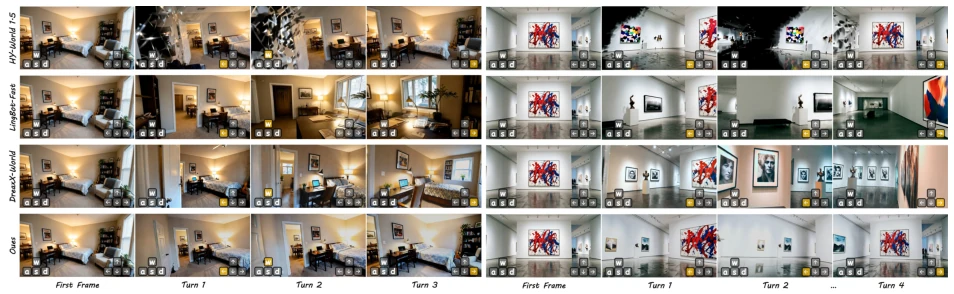

AlayaWorld 试图打造一个“全能型”的交互式生成世界框架，基于 LTX-2.3 微调，号称解决了控制、一致性、稳定性和实时性四大难题。这听起来像是给视频生成模型装上了“游戏引擎”的插件，但本质上它仍是一个自回归视频生成系统。所谓的“可玩性”更多体现在相机控制和提示词切换上，而非真正的物理模拟。开源承诺也颇具“画饼”嫌疑，代码和权重要等到 7 月中旬才发布，这种“先吹后做”的节奏在 AI 圈并不罕见。虽然它整合了 3D 缓存和误差银行等模块，试图提升长视界生成的稳定性，但在动态物体处理和复杂物理交互上仍有局限。这更像是一个高质量的“视频编辑器”而非真正的“世界模拟器”，对于具身智能而言，它提供了丰富的视觉数据，但物理交互的深度尚待验证，且 2026 年的发布日期暗示这可能是一个面向未来的概念验证项目。
AlayaWorld attempts to build an "all-around" interactive generative world framework, fine-tuned based on LTX-2.3, claiming to solve the four major challenges of control, consistency, stability, and real-time performance. This sounds like installing a "game engine" plugin on a video generation model, but essentially it remains an autoregressive video generation system. The so-called "playability" is more reflected in camera control and prompt switching, rather than true physical simulation. The open-source promise also bears suspicion of "overpromising", code and weights will not be released until mid-July, this "hype-first, deliver-later" rhythm is not rare in the AI community. Although it integrates modules such as 3D cache and error bank, attempting to improve the stability of long-horizon generation, there are still limitations in dynamic object processing and complex physical interaction. This is more like a high-quality "video editor" rather than a true "world simulator". For embodied intelligence, it provides rich visual data, but the depth of physical interaction remains to be verified, and the 2026 release date suggests this may be a future-oriented proof-of-concept project.
Traditional game world construction relies on high-cost manual production pipelines, content modification and expansion are extremely difficult, making it hard to adapt to rapidly changing demands. Video world models provide a new paradigm, capable of synthesizing future observations based on interaction, but face four major challenges: control openness, spatiotemporal consistency, long-horizon stability, and real-time operation. Existing works like Genie have limited generalization capabilities and struggle to transcend a single game; Yume supports exploration but has coarse control granularity; Matrix can generate in real-time but is closed-source. Furthermore, autoregressive models are prone to accumulating errors during long-sequence generation, leading to visual drift, and existing memory mechanisms struggle to balance spatial backtracking and temporal dynamics. Therefore, building a generative world framework that is both open and controllable, yet long-horizon stable and supporting real-time interaction is crucial. This is not only an entertainment need but also infrastructure for embodied intelligence simulation and decision-making research, capable of reducing robot training costs and accelerating algorithm iteration.

Figure 1 Interactive world simulation across diverse scenes. AlayaWorld synthesizes explorable worlds that span first- and third-person viewpoints, real-world, game, and synthetic domains, and both indoor and outdoor environments. Moreover, it accommodates open-ended actions such as spell-casting, weapon combat, and monster summoning.
方法Method
AlayaWorld 采用全栈框架，基于 LTX-2.3 自回归 DiT 架构。交互模块结合显式渲染证据与轻量级架构注入：维护 3D 缓存并在目标轨迹渲染，提供几何证据，同时通过 AdaLN 注入相机姿态，兼顾精度与效率。一致性通过空间与时间双重记忆实现：3D 缓存锚定静态结构以支持回路闭合，压缩的历史嵌入捕捉动态变化。稳定性方面，引入误差银行，在训练时将累积的残差伪影注入记忆条件和目标段，使模型学会在受损历史下生成，防止误差累积。误差银行不仅存储残差，还将其作为结构化扰动，在训练时同时注入记忆条件和目标段，模拟长视界推理中的不完美状态。运行时通过 DMD 蒸馏减少去噪步数，并采用小时间块与提示词切换机制，降低视觉与语义延迟，实现实时交互。这种设计分离了空间几何与时间动态的建模，避免了单一记忆机制的失效模式。
AlayaWorld adopts a full-stack framework, based on the LTX-2.3 autoregressive DiT architecture. The interaction module combines explicit rendering evidence with lightweight architecture injection: maintains 3D cache and renders on target trajectories, providing geometric evidence, while injecting camera pose through AdaLN, balancing accuracy and efficiency. Consistency is achieved through spatial and temporal dual memory: 3D cache anchors static structures to support loop closure, compressed history embeddings capture dynamic changes. In terms of stability, an error bank is introduced; during training, accumulated residual artifacts are injected into memory conditions and target segments, enabling the model to learn generation under damaged history, preventing error accumulation. The error bank not only stores residuals but also treats them as structured perturbations, injecting them into memory conditions and target segments simultaneously during training, simulating imperfect states in long-horizon reasoning. At runtime, DMD distillation is used to reduce denoising steps, and small time blocks with prompt switching mechanisms are adopted to reduce visual and semantic latency, achieving real-time interaction. This design separates the modeling of spatial geometry and temporal dynamics, avoiding the failure mode of a single memory mechanism.
Experiments are based on LTX-2.3 fine-tuning, 720p 24fps, 4 denoising steps per block. Qualitative results show that camera control can faithfully follow viewpoint changes, and scene geometry is reasonable. Prompt-driven actions switch at block boundaries, maintaining visual continuity and supporting open actions. In consistency tests, leaving and returning to trajectories maintains geometric and texture consistency, outperforming baselines. Compared with models like Genie, AlayaWorld performs better in loop closure tests, with no obvious scene reset or geometry collapse. Long-horizon generation maintains object identity and motion continuity, with no obvious artifact accumulation. Style transfer experiments prove that scene structure remains consistent under various artistic styles. Overall, it indicates that the framework achieves a balance in long-horizon, consistency, and real-time performance, but mainly relies on visual quality assessment, lacks quantitative metrics for physical interaction, and baseline comparisons are mainly conducted among open-source models, not including closed-source tech giants' solutions.

Figure 3 Qualitative results of prompt-driven actions.

Figure 4 Consistency comparisons with existing method.